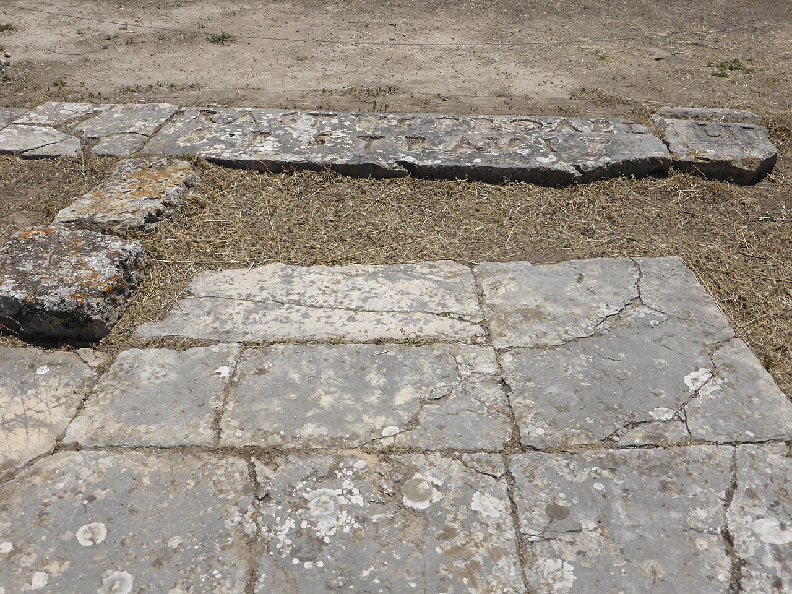

Erastus Inscription

A Latin pavement inscription near Corinth's theatre reading that Erastus, in return for his aedileship, laid the pavement at his own expense. An aedile was a senior city official responsible for public works and finances.
Biblical Significance
Paul greets 'Erastus, the city treasurer' of Corinth in Romans 16:23, and many scholars identify the two as the same man, though the identification is debated because the titles differ slightly. Either way, the inscription shows a high-ranking Erastus in Paul's Corinth, illustrating how the gospel reached into civic leadership.
Interpretations
Scholars debate whether the Erastus named as Corinth’s aedile is Paul’s Erastus of Romans 16:23 — the name, city, and office fit, but the inscription does not prove the identification.
Scripture Illuminated
Awaiting Review Not yet checked against scholarly sources. Treat its claims as provisional until this entry is reviewed. About verification
Last reviewed: not yet reviewed